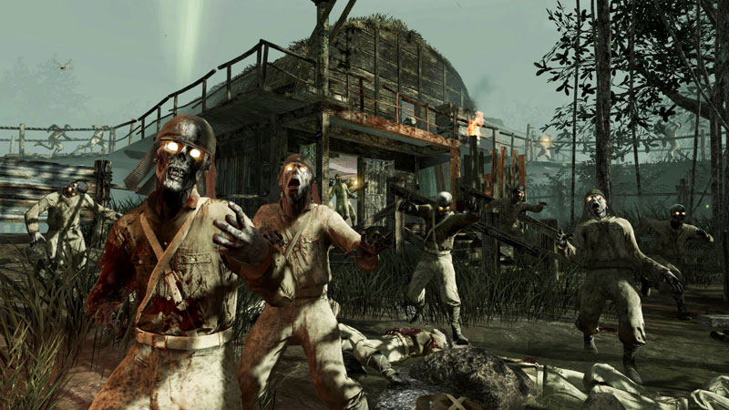
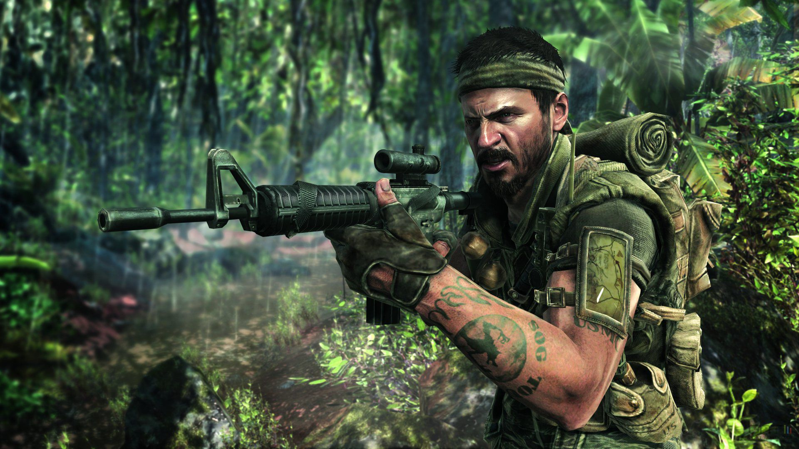

CALL OF DUTY ZOMBIES
Today at this year's DICE developer summit, Treyarch's Mark Lamia revealed the time he almost cut the zombies mode from Call of Duty: World at War.
While World at War was in development, a small group of programmers spent their off-time working on a Nazi zombies prototype just for fun. Since the
game was in crunch, and zombies didn't fit with the franchise's setting, Lamia considered telling them to stop wasting time and focus on the primary game.
It was a move he described as something "that would have been the biggest mistake of my career." In the end, he calmed down and tried out the mode himself.
It turned out to be really fun, and Lamia felt it would be a worthwhile addition to the game. But trying to convince the franchise's leadership was another
uphill battle and some people even thought it would be a "disgrace to the franchise." The team continued working on the mode in the background, and tried using
word of mouth to spread how enjoyable the mode was, rather than pitching it directly to higher-ups at the studio. However, Call of Duty's marketing and PR teams
felt it was confusing and too off-brand to fit with the Call of Duty franchise. Back then in 2008, Lamia sad trying to sell a Call of Duty Zombies game would have
felt like the series had jumped the shark. That's why it was put in World at War as an easter egg that could only be accessed by players who had beat the main campaign.
Eventually after launch, the zombie mode became so popular that it was unlocked through a patch. The fiction for the zombie universe evolved over time and was driven in
a large part by fans and their speculation and message board posting. But even with Black Ops, there was no branding, PR, or marketing around the game's zombies mode.
Lamia described it as a blessing in disguise, since it gave fans of the game a way to continue interacting with the game in a more viral sense. Kind of like the zombie virus itself.
Lamia didn't reveal any details on what type of Call of Duty Treyarch is working on next, but given the nature of the talk, it's safe to assume there will be zombies.
However...Now that we take a look at the past zombies maps, you would see the evolution of the now exclaimed game mode on the call of duty franchise.
| Call of Duty Zombie Maps In Sequential Order & Other Assets |
|---|
| |  | |
|
|
|  |
|  | |  |
| Other Genres of Call of Duty |
|---|
| Click Here to buy cod1. | Click here to buy cod2. |
| Click here to buy cod3. |
| Click here to buy cod4. | Click here. to buy Call of Duty World at War. | Clickhere to buy Call of Duty Modern Warfare 2.
| |  | |
|
|
| |